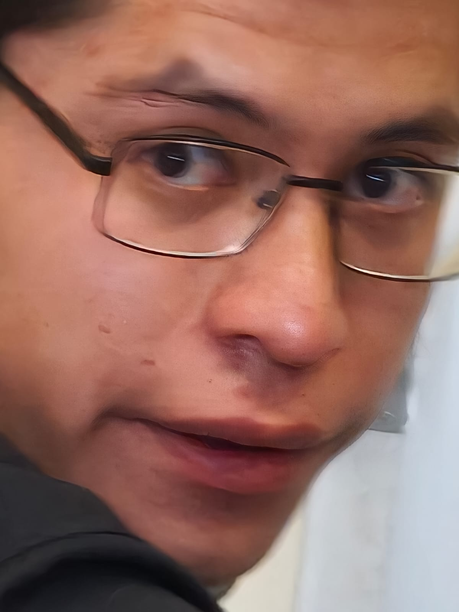

Calle: Cam Viejo a Santa Ana Rios 348C
Ciudad: Huamantla, Tlaxcala
Teléfono: 247-116-0660
Correo: tadeodefermin766@gmail.com
Python, linux, Java, Aplicaciones Web, Hacking
Septiembre 2024 - Agosto 2026
Gracias a la universidad, aprendi mucho sobre redes CCNA Cisco, Programacion en Python y más...
Septiembre 2026 -Diciembre 2027
Mejora de habilidades y nuevas cosas de IA Hacking y ML
Mayo 2026 - Agosto 2026
Skills: Aprendí muchas habilidades en el área de desarrollo y soporte técnico